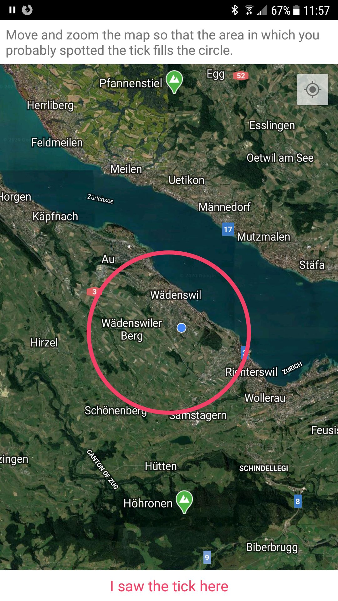

OpenGeoHub 2023 Data Challenge
Predicting Tick Bite Risk based on 30k tick reports
Abstract
The tick prevention app “tick” for iOS and android is a mobile application that provides information on tick prevention and tick bite risk. The user is able to enter tick bites in a diary and is reminded to check for possible disease symptoms. Additionally, the user can enter the location of where the tick bite took place on a map, thus helping to identify tick hotspots. More information can be found here.
In this manner, over 50k tick bites were collected over a period of several years. This data can be used to identify tick hotspots and to predict tick bite risk based on environmental factors. We have a list of variables that experts think are important for predicting tick bite risk. We want to use machine learning to find out which variables are actually important and to predict tick bite risk for a given location. The goal is to create a model which outperforms the existing expert-based model.
You can download the whole dummy dataset here. Password is provided in the Mattermost channel. The real datset will be provided after signing the NDA.
Libraries used to create this report
library("dplyr")
library("sf")
library("readr")
library("ggplot2")
library("plotly")
library("purrr")
library("janitor")
library("lubridate")
library("terra")
options("sf_max.plot" = 1)Task definition
YOUR TASK (should you choose to accept it) is to create a raster dataset with a 100 m resolution in the coordinate system EPSG:2056 with the extent as provided in the raster mask (see below). The cell values should range from 0 to 100 (0 to 1 uses more disk space1) and describe the normalized tick-report occurance for Mai 2021 with values for ALL land mask pixels. Deadline is Friday, 1. September at 13:00. You can use tick occurrences + any possible covariates for previous years and NO training data for 2021. You should consider modeling tick presence as function of dynamic climate but simple spatial-only models can also be used.
To get you started, we have prepared some spatial covariates (see Section 6). However, feel free to use your own.
Steps needed to participate:
- On mattermost, write in the hackathon chat that you are interested in joining the tick data challenge. We will send you an NDA to sign and return to us .(the tick data and some of the prepared covariates are confidential)
- After returning the NDA, you will be provided with the tick data and the prepared covariates. Depending on our internet connection, we will provide you the data with a download link or a usb drive.
- Use covariates to predict the tick density in Mai 2021, using the programming language of your choice. Generate a html or pdf report from your workflow, details see below. Make sure your output raster has the correct dimensions (details see below).
- Make a Zip File of your scripts, the report and your final raster output (not the inputs!) and send the zip-File to Nils via Mail
Please make your script as reproducible as possible. For example, you should be very explicit about where you get your input data from. Additionally, please use literate programming methods to document your work.
- R users: You can use RMarkdown, Quarto or JupyterNotebook and generate a html/pdf report. If you prefer to work with
*.R-Scripts, you can usermarkdown::render("your-r-script.R", "html_document")to convert your R Script to a html or pdf report. - Python users: You can use Quarto or JupyterNotebook and generate a html/pdf report. If you prefer to work with
*.py-Scripts, you can use jupytext to create a html/pdf report. - Julia users: You can use Quarto or JupyterNotebooks and generate a html/pdf report. If you prefer to work with
*.jlfiles, you can ask us how to turn this into a html/pdf report.
Submission Walkthrough
Code to prepare the tick-report data (not relevant to you)
tick_reports <- read_csv("data/raw/Tick_Reports/tick-reports.csv")
# clean column names and format columns
tick_reports <- tick_reports |>
janitor::clean_names() |>
mutate(across(c(id, x, y, acc, body_part, report_type, age, gender, host, pickup, deleted), ~ as.integer(.x))) |>
mutate(across(c(lat, lon, date_acc), ~ as.numeric(.x))) |>
mutate(
datetime = as.POSIXct(date, format = "%Y-%m-%d %H:%M:%S", tz = "CET"),
date = as.Date(datetime)
)
# remove rows without a data or data is older than 2015
tick_reports <- tick_reports |>
filter(!is.na(date)) |>
filter(date > "2015-01-01")
# remove reports outside a oversized bounding box
XMIN_21781 <- 485000
XMAX_21781 <- 834000
YMAX_21781 <- 296000
YMIN_21781 <- 075000
tick_reports <- tick_reports %>%
filter(x < XMAX_21781, x > XMIN_21781) %>%
filter(y < YMAX_21781, y > YMIN_21781)
# remove reports without a uuid or reports that are marked as deleted
tick_reports <- tick_reports %>%
filter(uuid != "") %>%
filter(deleted != 1)
# till now, all steps are relatively straightforward. Now, opinions start to
# matter.
# remove reports with a spatial accuracy of more than 1 km radius
tick_reports <- tick_reports |>
filter(acc < 1000)
# this step is not necessary anymore, I'll keep it here to document
# default acc values. There are more default values it seems, as can be seen
# when visualizing the data as a histogram
tick_reports <- tick_reports %>%
filter(!(acc %in% c(57274L, 64434L, 1014L)))
tick_reports_sf <- st_as_sf(tick_reports, coords = c("lon", "lat"), crs = 4326)
# I dont know who came up with this, but it doesn't seem to be the case that there
# are more locations near the default locations than outside
default_locations <- data.frame(lat = c(47.3647, 46.81), lon = c(8.5534, 8.23)) |>
st_as_sf(coords = c("lon", "lat"), crs = 4326)
is_default <- st_is_within_distance(tick_reports_sf, default_locations, 1000) |>
map_lgl(\(x)length(x) > 0)
sum(is_default)
# date accuracy only has two values: 43'200 and 432'000 (0.5 and 5 days?)
# There are only 8k reports for the higher value, we can discard these
table(tick_reports$date_acc)
tick_reports <- tick_reports |>
filter(date_acc < 50000)
tick_reports$date_acc <- NULL
tick_reports$body_part <- NULL
tick_reports$report_type <- NULL
tick_reports$age <- NULL
tick_reports$gender <- NULL
tick_reports$host <- NULL
tick_reports$pickup <- NULL
tick_reports$uuid <- NULL
tick_reports$comment <- NULL
tick_reports$deleted <- NULL
# some reports are obivously duplicates: same x and y and date (time may vary slighly)
tick_reports |>
group_by(x, y, date) |>
filter(n() > 1) |>
select(id, datetime)
# keep only distinct reports
tick_reports <- tick_reports |>
distinct(x, y, date, .keep_all = TRUE)
# I think the lon / lat coorindates are more accurate.
tick_reports$x <- NULL
tick_reports$y <- NULL
tick_reports_sf <- st_as_sf(tick_reports, coords = c("lon", "lat"), crs = 4326) |>
st_transform(2056)
tick_reports_sf <- bind_cols(tick_reports_sf, st_coordinates(tick_reports_sf))
switzerland <- read_sf("data/raw/swissTLM/swissBOUNDARIES3D_1_4_LV95_LN02.gdb", "TLM_LANDESGEBIET") |>
st_zm() |>
filter(NAME != "Liechtenstein") |>
st_union() |>
st_transform(2056)
tick_reports_sf <- tick_reports_sf[switzerland, , ]
tick_reports_sf$date <- NULL
tick_training <- tick_reports_sf |>
filter(year(datetime) < 2021)
range(tick_traning$datetime)
tick_test <- tick_reports_sf |>
filter(year(datetime) == 2021, month(datetime) == 5)
range(tick_test$datetime)
st_write(tick_training, "./data/prepared/Tick_Reports/tick_reports_training.gpkg", "tick_reports_training", append = FALSE)
# make sure to never export the TEST data into the "prepared"-folder, otherwise this is shared with the students.
st_write(tick_test, "data/raw/Tick_Reports/tick_reports_TEST.gpkg", "tick_reports_test", append = FALSE)Code on how we generated the mask (not relevant for you)
# download from https://www.swisstopo.admin.ch/de/geodata/landscape/tlmregio.html
unzip("./data/raw/swissTLM/swisstlmregio_2022_2056.gdb.zip", exdir = "./data/raw/swissTLM/")
switzerland <- read_sf("data/raw/swissTLM/swissBOUNDARIES3D_1_4_LV95_LN02.gdb", "TLM_LANDESGEBIET") |>
st_zm() |>
filter(NAME != "Liechtenstein") |>
st_union() |>
st_transform(2056)
tlm_region_lake <- st_read("./data/raw/swissTLM/swissTLMRegio_Produkt_LV95.gdb", "TLMRegio_Lake")
tlm_region_lake <- tlm_region_lake[switzerland,,]
tlm_region_lake <- tlm_region_lake |>
slice_max(SHAPE_Area, n = 7)
mask_template <- rast(crs = "epsg:2056", resolution = 100, xmin = 2485000, xmax = 2834000, ymin = 1075000, ymax = 1296000)
switzerland_mask <- terra::rasterize(switzerland, mask_template)
switzerland_mask <- mask(switzerland_mask, tlm_region_lake,inverse = TRUE)
writeRaster(switzerland_mask, "./data/prepared/Mask/Mask.tif", datatype = "INT1U", overwrite = TRUE)Imagine you did your machine-learning magic and created an object named density_predicted.
To compare density_predicted to density_true, the need to have the same extent and resolution. You can use the dataset (Mask/Mask.tif) to ensure this.
switzerland_mask <- rast("./data/prepared/Mask/Mask.tif")
# Step 1: Resample
density_predicted <- resample(density_predicted, switzerland_mask)
# Step 2: Crop
density_predicted <- crop(density_predicted, switzerland_mask)
# Step 3: Mask
density_predicted <- mask(density_predicted, switzerland_mask)Next, normalize it to values between 0 and 100, for example with the min-max values.
raster_normalize <- function(input, factor = 1){
raster_range <- minmax(input)
(input - raster_range[1])/(raster_range[2] - raster_range[1])*factor
}
density_predicted <- raster_normalize(density_predicted, 100)
density_predictedclass : SpatRaster
dimensions : 2210, 3490, 1 (nrow, ncol, nlyr)
resolution : 100, 100 (x, y)
extent : 2485000, 2834000, 1075000, 1296000 (xmin, xmax, ymin, ymax)
coord. ref. : CH1903+ / LV95 (EPSG:2056)
source(s) : memory
name : density_predicted
min value : 0
max value : 100 Now, export your prediction to a Geotiff with the datatype INT1U and a compression (gdal=c("COMPRESS=DEFLATE")) and send it to Nils via Mail.
writeRaster(density_predicted, "./data/raw/Tick_Reports/density_predicted.tif", datatype = "INT1U", overwrite = TRUE, gdal=c("COMPRESS=DEFLATE"))The winner is determined by comparing your predictions with the kernel density estimations that we calculated from the reports in Mai 2021. Let’s illustrate this:
density_true <- rast("./data/raw/Tick_Reports/density_true.tif")
density_predicted <- rast("./data/raw/Tick_Reports/density_predicted.tif")
# some functionBackground
Ticks are small arachnids that feed on the blood of mammals, birds and reptiles. Ticks are vectors for several diseases, including Lyme disease, tick-borne encephalitis, babesiosis and anaplasmosis. In Switzerland, tick bites are a common phenomenon. In 2019, 3.1% of the population was infected with Lyme disease. The tick prevention app “tick” was developed by the Institute for Natural Resource Sciences of the Zürcher Hochschule für Angewandte Wissenschaften (ZHAW) in 2015. The app is available for android and ios and provides information on tick prevention and tick bite risk. The user is able to enter tick bites in a diary and is reminded to check for possible disease symptoms. Additionally, the user can enter the location of where the tick bite took place on a map, thus helping to identify tick hotspots. More information can be found here.
In this manner, over 50k tick bites were collected over a period of several years. This data can be used to identify tick hotspots and to predict tick bite risk based on environmental factors. We have a list of variables that experts think are important for predicting tick bite risk. We want to use machine learning to find out which variables are actually important and to predict tick bite risk for a given location. The goal is to create model which outperforms the existing expert-based model.
For this, we have the following data available:
- Tick reports: Tick bites recorded by users of the tick app, 2015 - 2020
- Covariates: Geodata (raster / vector data from various sources)
Dependent variable: Tick data
Temporal dimension
Every year, the number of users using the app continues to grow and thus the number of recorded tick bites grows rapidly. Here are some figures showing the data from 2015 to 2019.


Spatial accuracy
When specifying the location where the tick bite occurred, the user has the possibility to zoom into the map very closely (see Figure 2 (a)). The higher the zoom level the user chooses, the smaller the radius of the red circle. This radius can be used as a proxy of the accuracy of the user’s knowledge of where the tick bite occurred. The distribution of the accuracies is approximately log normal, see Figure 2 (b). Different versions of the app have different default values for accuracy. These default values are the peaks visible in Figure 2 (b).


Covariates / Geodata
To save you some time, we have put together a list of predictors which the experts think are important for modelling tick risk. This data will be made available to you via a zip file which you can download.
Predicting tick bite risk is not only about predicting the occurance of ticks, but also the occurance of people. Formally, Risk is defined as follows:
\[\text{Risk} = \text{Hazard} \times \text{Exposure}\]
This means that the risk is higher for areas not only where the Hazard is higher (i.e. more ticks), but also where Exposure is higher, i.e. more people. In other words, we must correct our data for population before making any predictions about the occurrence of ticks, as Figure 3 shows. If you are not familiar with swiss geography, the hotspots of tick bites are clearly around major cities like Zurich, Bern etc.
Modelling Exposure
To model exposure, the most important predictor is population density, which is available at a 100m resolution here: Population density: A raster dataset with 100m resolution with population count.

To get you started, we provide you with a high resolution population density dataset.
Code on how we prepared the population density data (irrelavant to you)
population_zips <- list.files("data/raw/Population/", "\\.zip$", full.names = TRUE)
map(population_zips, \(x){
csv <- paste0("STATPOP",str_sub(basename(x), 14, 17),".csv")
file_names <- unzip(x, list = TRUE)$Name
csv_path <- file_names[str_detect(file_names, csv)]
unzip(x, files = csv_path, exdir = "data/prepared/Population", junkpaths = TRUE)
})# here is how you can now import these raster datasets
population <- list.files("data/prepared/Population/", full.names = TRUE) |>
map(\(x){
read_delim(x, col_select = c(E_KOORD, N_KOORD, matches("B\\d{2}BTOT"))) |>
rast()
}) |>
rast()Modelling Hazard
A simple method to determine the relevant features to predict hazard is by consulting the method used to create the the existing expert-based model.
Land use cover
Land use statistics
The main input in the mentioned expert based model is the Land use statistics dataset. This is a raster with a 100m resolution with 72 basic categories. These were classified according to a scheme, a sample of which is displayed in Table 1. The full classification table is availalable in the zip file (data/prepared/Arealstatistik/Arealstatistik_expert-opinion.csv).
| Category | Description | Class |
|---|---|---|
| 63 | Flood Protection Structures | 0 |
| 3 | One- and Two-Family Houses | 2 |
| 29 | Construction Sites | 0 |
| 43 | Home Pastures | 2 |
| 72 | Glaciers, Firn | 0 |
| 18 | Roadside Greenery | 1 |
We obtained the data from here and prepared a raster dataset in the following manner:
data preperation
arealstat_path <- "./data/raw/Arealstatistik/ag-b-00.03-37-area-csv.csv"
# important are the columns: E_COORD N_COORD AS18_72
# (x / y coordinates in EPSG 2056 and landuse in 72 cateogories for the years 2013 - 2018
# see be-b-00.03-37-area-var-v01.xlsx in ag-b-00.03-37-area-csv-APPENDIX.zip
areal <- read_delim(arealstat_path, ";", col_select = c(E_COORD, N_COORD, AS18_72))
arealstat_noas04 <- rast(areal, crs = "epsg:2056")
writeRaster(arealstat_noas04, "./data/prepared/Arealstatistik/AS18_72.tif")CORINE Landcover
The CORINE Landcover (CLC) dataset is available for Switzerland as a vector dataset here. We did not do any preperation on this dataset beforehand.
Elevation
Temperature has a big impact on the occurance of ticks. The mentioned expert based model used elevation as a proxy for temperature and removed risk classes based according to the following system:
| Elevation | Classification |
|---|---|
| 1200 - 1600 | minus 1 class |
| 1600 - 1900 | minus 2 classes |
| > 1900 | 0 |
The Digital height model DHM25 is a dataset with 25 m resolution describing elevation.
data preperation
dhm_path <- "./data/prepared/DHM/"
unzip("data/raw/DHM/DHM25_MM_ASCII_GRID.zip", exdir = dhm_path)
dhm25 <- rast(file.path(dhm_path, "ASCII_GRID_1part/dhm25_grid_raster.asc"))
writeRaster(dhm25, file.path(dhm_path, "DHM25.tif"))
file.remove(list.files(file.path(dhm_path, "ASCII_GRID_1part/"),full.names = TRUE))Weather
In addition to the static model linked above, the mobile application includes a risk model that additionally takes current weather data into account. According to our expert, the following variables are important:
- mean, max. and min. daily temperature
- relative humidity
- percipitation sum over 24h
- relative sunshine duration (0 - 100%)
These variables (or a combination of them) raised or lowered the risk class according to the following system:
| Parameter | Classification |
|---|---|
| relative humidity < 30% | minus 2 classes |
| relative humidity 30 - 70 % | minus 1 class |
| percipitation 24h-sum is between 2-15mm AND temperature > 5°C | plus 1 class |
| max daily temperature is > 30°C | minus 2 classes |
| mean daily temperature is > 30°C | minus 1 class |
| relative sunshine > 50% AND mean daily temperature is > 30° | minus 2 classes |
| min daily temperature is < 5°C AND relative sunshine is < 20% | class 0 |
| mean daily temperature <5°C AND exposition is south AND relative sunshine is 20 - 60% | minus 2 classes |
| mean daily temperature <5°C AND exposition is south AND relative sunshine is > 60% | minus 1 class |
| mean daily temperature <5°C AND exposition ist not south | class 0 |
| mean daily temperature <5°C AND exposition is south AND relative sunshine is < 50% | minus 2 classes |
| mean daily temperature <5°C AND exposition is south AND relative sunshine is > 50% | minus 1 class |
We have prepared some weather data from the Federal Office of Meteorology and Climatology MeteoSwiss (Meteo Schweiz). We will provide you with the following datasets (years 2015 - 2021):
- RhiresM: Monthly precipitation
- SrelM: Monthly relative sunshine duration
- TabsM: Monthly mean temperature
A full list of the available variables can be found here.
This is how we prepared the data:
Data preperation
files_monthly <- c("RhiresM_61_21_ch01r.swiss.lv95.zip", "SrelM_71_21_ch01r.swiss.lv95.zip", "TabsM_61_21_ch01r.swiss.lv95.zip")
weather_path <- "./data/prepared/Weather"
unzip("./data/raw/Wetter/Klimadaten_Feb22.zip", files = file.path("Klimadaten_Feb22", files_monthly), exdir = weather_path, junkpaths = TRUE)
weather_zips <- list.files(weather_path, pattern = "\\.zip$", full.names = TRUE)
sapply(weather_zips, \(x){
# browser()
nc_names <- unzip(x, list = TRUE)$Name
nc_select <- nc_names[as.integer(str_match(nc_names, "(\\d{4})\\d{8}")[,2]) >= 2015]
nc_select <- nc_select[!is.na(nc_select)]
exdir <- file.path(weather_path, str_match(basename(x), "([a-zA-Z]+)")[,2])
unzip(x, files = nc_select, exdir = exdir, junkpaths = TRUE)
})
file.remove(weather_zips)Other data sources:
- pan-EU climatic variables available at: https://github.com/OpenGeoHub/spatial-prediction-eml/blob/master/input/mood_layers1km.csv (especially annual human density, night lights, NDVI etc)
Footnotes
If you rescales your values to 1 - 100 and export it with
datatype = "INT1U"(eight bit unsigned integer), your file size is reduced by about 70%.↩︎